Lab 3: Keypad Scanner
Introduction
In this lab, I wired up a keypad to an FPGA and displayed the last two button presses on a dual 7-segment display.
Module Design
The code for this lab can be found at this repository.
When designing my approach to this lab, I split my work up across a number of different submodules. In total, I had 12 different modules, although some were re-used from previous labs. This section describes the design approaches I took and the structure of different modules and how they communicate.
Switch Debouncing
My strategy for switch debouncing was relatively simple: require any changes in an input signal to be held continuously for a certain number of clock cycles before accepting it as the new output. I attached the output of the debouncer to a register, and tied a comparison for equality between the input and output to the reset pin of a counter. That way, when the input matches the output, the counter is held at 0, otherwise the counter starts to increment. If the input is a bounce, it simply resets the counter back to 0. Otherwise, when the maximum count of the counter is reached, the register is enabled and the output gets the value of the input. This also resets the counter back to 0 and holds it there until any further changes are detected.
To avoid any weird shenanigans with multi-touches on the keypad, I created an individual debouncer for each button on the keypad using a generate block in SystemVerilog. This was definitely not the most hardware-efficient method available, but it had a massive advantage of making the logic easier to reason through. By putting each button on its own debouncing timer, the keypad polling module can run independently of any button presses. That is, the keypad poller can simply rotate outputs at a fixed delay without stopping at a row when we detect a button press, because even if we start scanning another row while a button is being held, the debouncer for that button will still “remember” the button press.
Another advantage of this debouncing strategy is that it debounces keypad presses as well as keypad releases. This avoids a situation where a button is being held down but mechanical switch bounce causes the program to mistakenly register the key being released and pressed down again.
FSM Design Strategy
The design and partioning of the FSMs used in this lab is very modular. Each module is responsible for a very specific task and I tried my best to avoid “meshing” two tasks into one module. For example, the module for detecting button presses on the keypad and the module for remembering the last two button presses are separate. This design makes the components built in this lab extremely reusable and adaptable for different use-cases (using my design, it would not be very difficult to modify for a 4-digit display instead of a dual display). This of course, comes at the cost of additional hardware, since there are many additional internal signals present used for submodule connections that could have been optimized away if I put many different functions into the same module.
The hierarchy of my design is as follows:
lab3_cj: The top-level module, which takes in a reset and keypad column pins as inputs, and outputs the keypad row drivers and dual 7-segment display anodes and cathodes. It instantiates an internal clock at 24 MHz and contains the following submodules:sync: Simply used to synchronize the keypad column inputs before passing them to other modules.keypad: The module responsible for managing the keypad state, like what buttons are being pressed and what row pins should be driven. It acceptscols[3:0]as an input, drivesrows[3:0], and outputsbuttons[3:0][3:0], which is a 2D-array containing the pressed state for all 16 buttons on the keypad. It accepts the following parameter:POLL_DELAY(how many clock cycles in between each row scan),SETTLE_DELAY(how long to ignore the column inputs right after changing rows, this was needed to fix some issues with my debouncer as explained below), andDEBOUNCE_DELAY, which is the debounce time for each keypad button. This module contained the following submodules:keypad_poller: Identical to thescannermodule from Lab 2, it just rotates between pulling each of the row pins low everyPOLL_DELAYcycles.keypad_settler: This was created to solve an issue I had with polling the rows of the keypad too fast. When I first wrote my keypad module, it didn’t respond to any button presses. If I increased the polling delay, the keypad would start responding, although much slower. If I decreased the polling delay but held two buttons in the same column (e.g. a1and a4), the keypad would register a button press for1only. Due to these observations, I reasoned that there must be a timing issue with the column pins during a row change that was messing with debouncing timers on each button, and maybe there was some latency between switching rows and actually seeing new values change on the column pins. Therefore, I created this module, which simply instructs the keypad to ignore the column pins entirely for a certain number of clock cycles after each row change. After implementing this module, the keypad worked normally.
keypad_entry: This module is responsible for keeping of the last two digits pressed on the keypad. It accepts as input thebuttons[3:0][3:0]signal from thekeypadmodule, and outputsdigit_1[3:0]anddigit_0[3:0]. It contains the following submodules:keypad_decoder: Combinational-logic only module that maps keypad rows and columns to hex digits. It also counts the number of buttons being held, for use in the next module.keypad_multipress: A simple state machine containing all the logic for handling multiple button presses, and instructs thekeypad_entrymodule when to actually update the display. It accepts thenum_pressed[3:0]signal from thekeypad_decodermodule, and outputsshould_updatewhenever transitioning from a state of no button presses or multi-button presses to a state of single button press.
seg7_dual: Simply takes the two hex digits from the output of thekeypad_entrymodule and drives the dual 7-segment display.
Design tradeoffs:
- The keypad is very modular, since it outputs what buttons are being held at any given time, not just the last two digits pressed. This means it could be used in any other scenario where we need to read arbitrary button presses.
- Because of the modularity, the logic contained within each module is relatively simple, and it is easy to trace how data flows between different modules. We don’t need to do any weird state logic for the scanner module where we have to temporarily stop scanning and wait for a button press to finish.
- The keypad module is also extremely hardware inefficient. It needs two copies of 4x4 bit arrays to store the un-debounced and debounced button states, as well as generating 16 copies of the debouncer module, which adds even more hardware usage. I probably could’ve changed the design to only require 4 debouncers, but it would require the
POLL_DELAYto be slower than theDEBOUNCE_DELAYand might make the keypad less responsive.
Block Diagrams
Top-Level
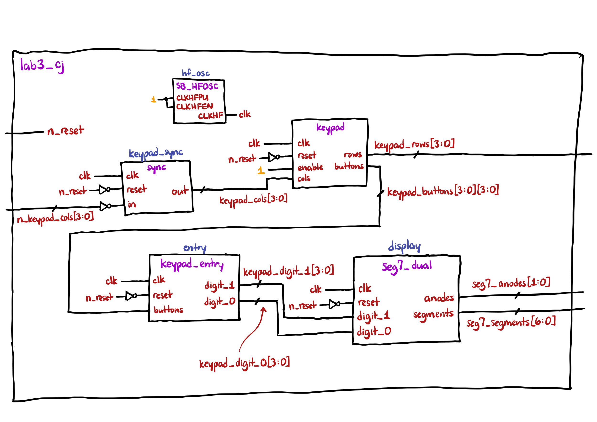
Debouncer
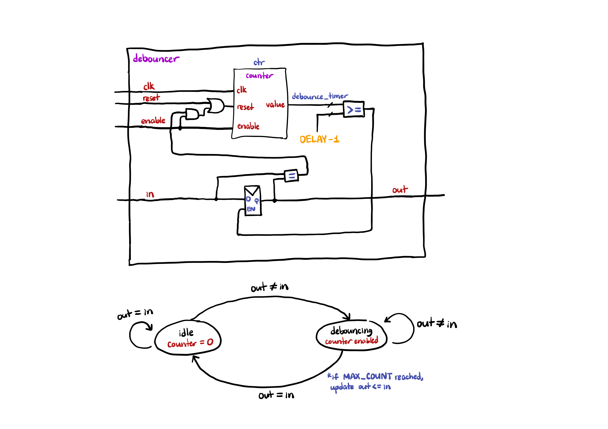
Keypad
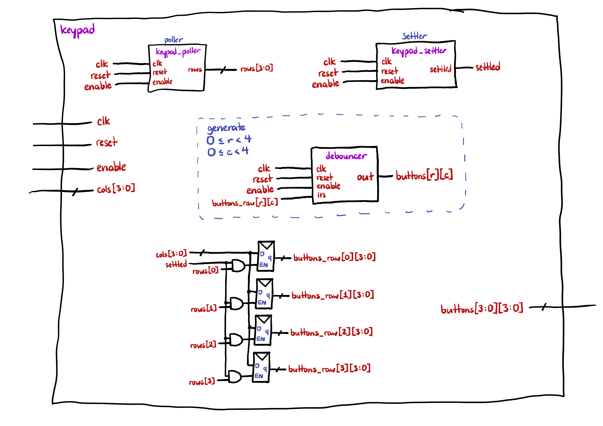
Keypad Entry
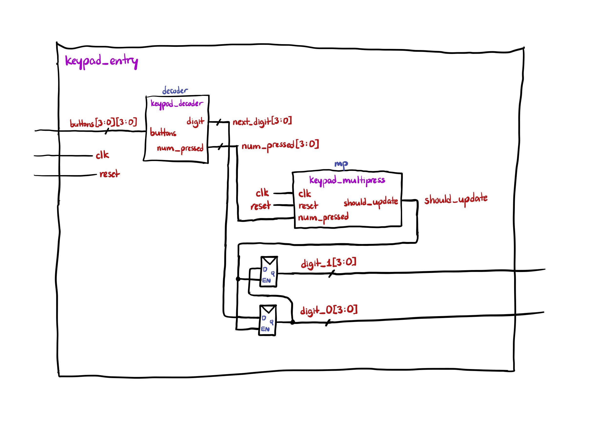
Keypad Multipress Handler
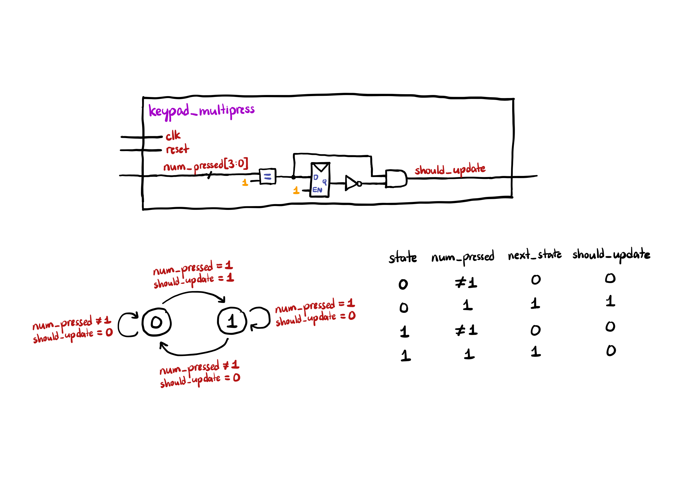
Keypad Settler
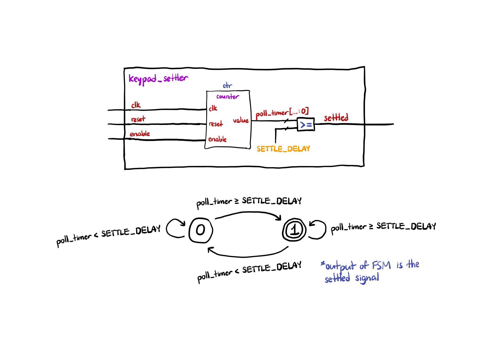
Schematics
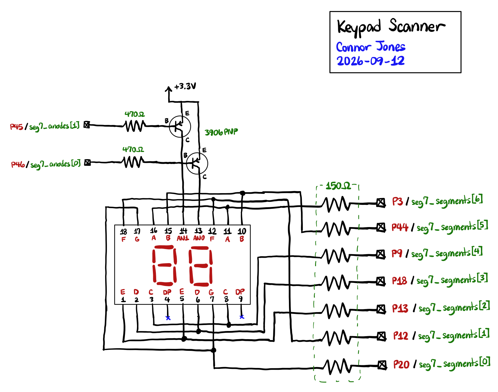
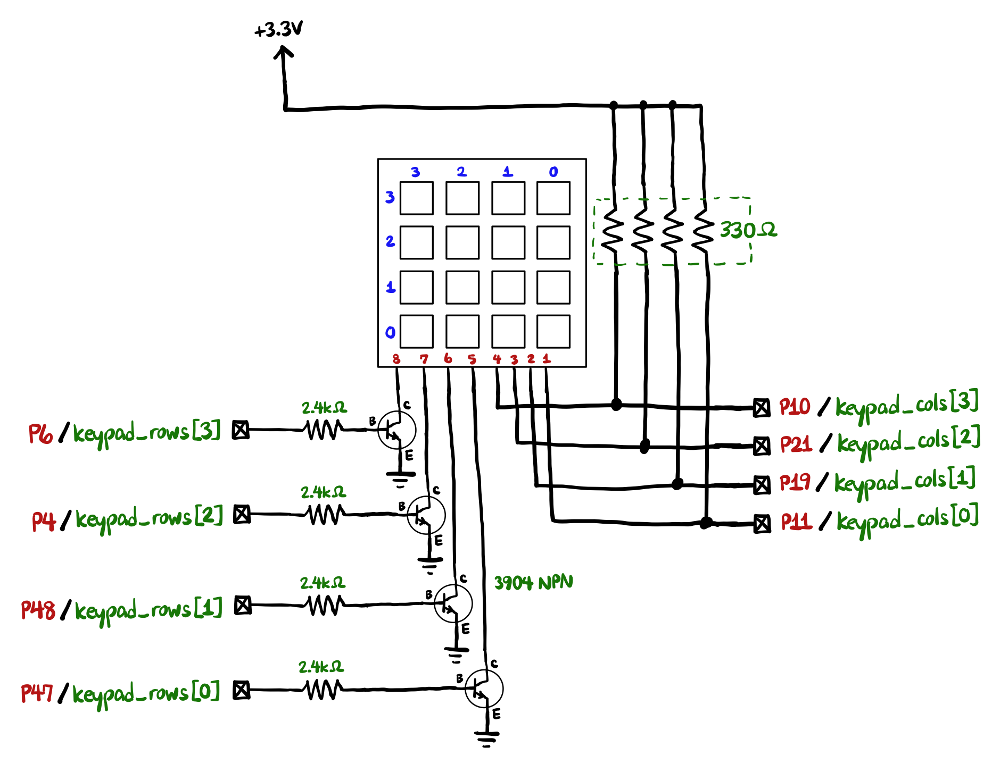
Testbenches & Simulation
Yosys Synthesis Report
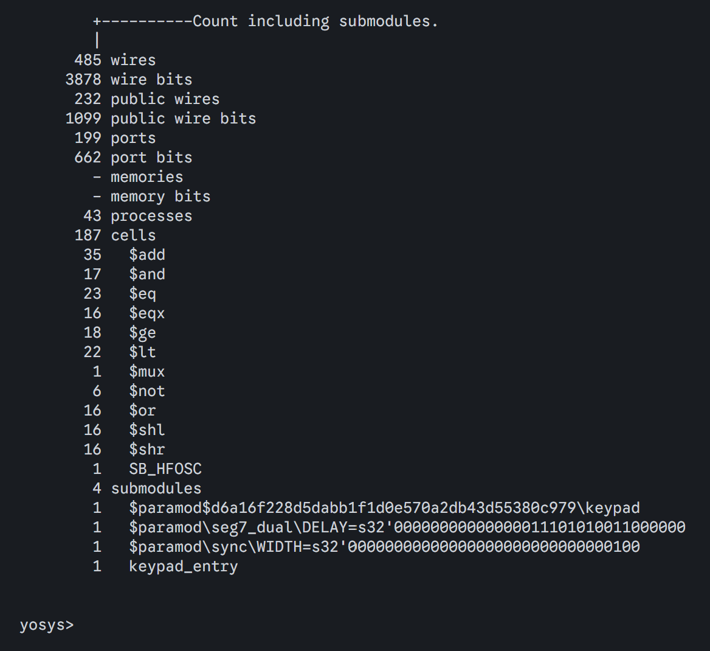
The synthesis report from yosys (the open-source synthesizer I used) reports no latch cells or tri-state buffers.
Top-Level
Here is the top-level testbench responsible for verifying all the connections between submodules. Note that some of the timing parameters were changed for the testbench because many were on the order of tens of thousands of clock cycles, which would make the waveforms unreadable.
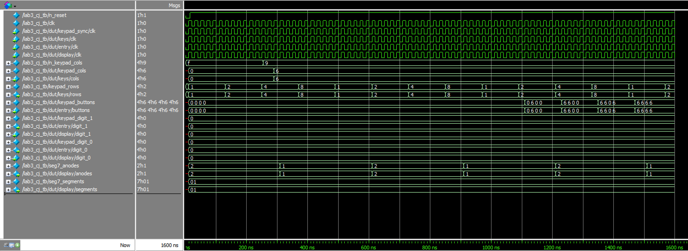
This testbench shows that:
clkis always connected to theclkports of each submodule (sync,keypad,keypad_entry,seg7_dual)- The
keypad_colsandkeypad_rowssignals are properly connected to thekeypadmodule- Note that
keypad_cols(internal signal) lags behindn_keypad_cols(top-level-input) because it has to go through the synchronizer first, so any updates are always a couple clock cycles late
- Note that
- The
keypad_buttonssignal is properly connected to thebuttonsinput inside of thekeypad_entrymodule - The
digit_1anddigit_0signals are properly connected between thekeypad_entryandseg7_dualmodules - The
segmentsandanodesoutputs of theseg7_dualmodule are properly connected to their top-level outputs
Debouncer
Here are the waveforms for the debouncer module. This is responsible for filtering out switch bounce from keypad presses by requiring a change in the input to be held for a continuous number of clock cycles before updating the output.
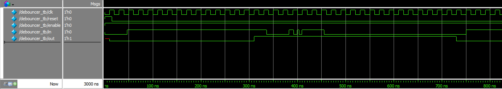
This waveform demonstrates the basic functionality of the debouncer. When in changes, out doesn’t follow until the debounce delay has elapsed. In this case, the delay is 14 clock cycles.
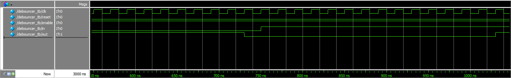
This waveform demonstrates correct functionality even when an input changes right on top of a rising clock signal.
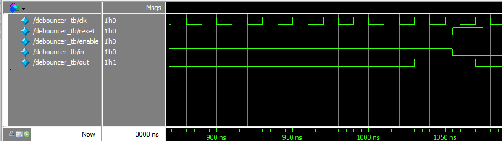
This waveform demonstrates the reset functionality.
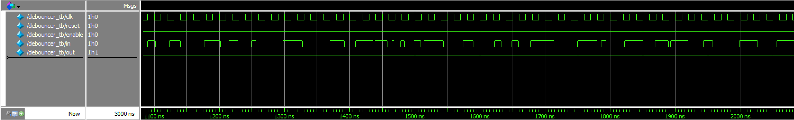
This waveform demonstrates correct functionality in response to a simulated mechanical switch bounce. Inputs change at different times relative to the clock signal, but the output doesn’t go high because the debouncer rejects the changes as noise.
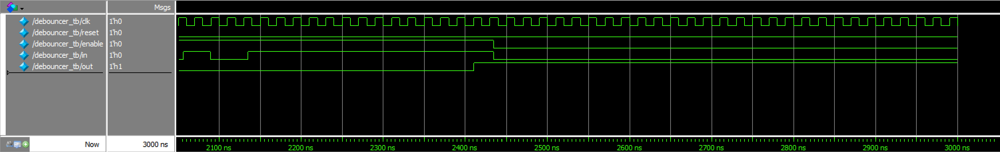
This waveform demonstrates the enable functionality. When the debouncer is disabled, it simply maintains its output while ignoring any changes to the input.
Keypad
Here are the waveforms:
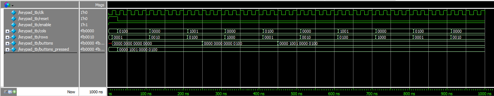
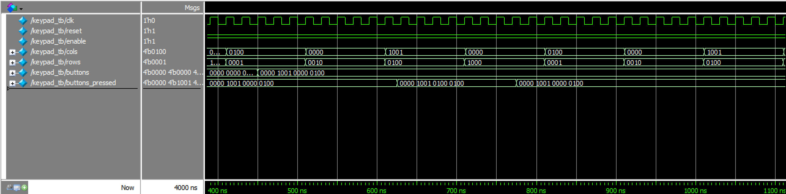
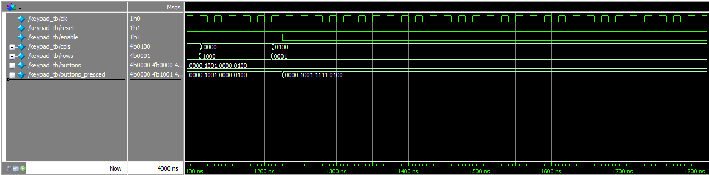
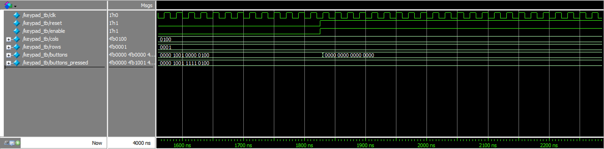
Keypad Decoder
Here are the waveforms for the keypad_decoder module. This module only consists of combinational logic to map keypad button locations to hexadecimal digits. It also counts the number of buttons being pressed.
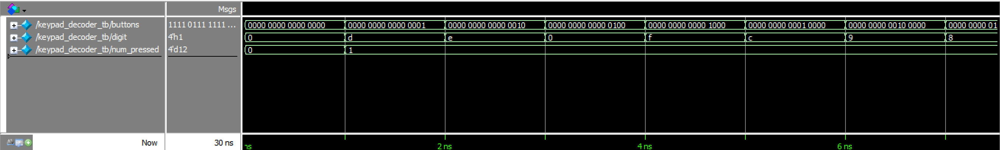
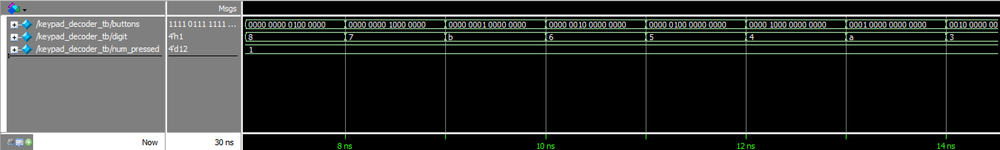
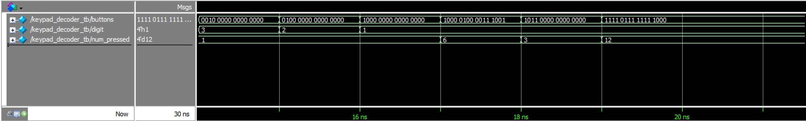
These waveforms exercise all possible 16 branches of the combinational logic (one for each button). It also tests a couple cases involving different numbers of buttons being pressed.
Keypad Entry
Here are the waveforms for the keypad_entry module. This module is responsible for keeping track of the last two digits entered on the keypad.
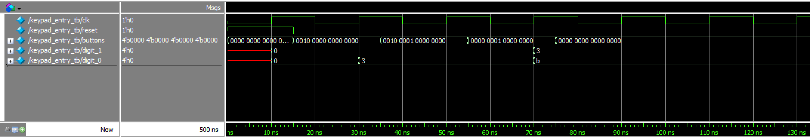
This waveform demonstrates basic functionality of the module:
- At 30ns, the module updates the rightmost digit to a
3in response to the corresponding button being pressed - At 35ns, the button
Bis held down in addition to3. The module rejects this additional keypress as per the specs - At 55ns, the button
3is released. This causes the keypad to transition from a multi-press state to a single-press state, which should register an additional keypress in accordance with the specs - At 70ns, the display updates with
Bas the rightmost digit and moves the3over to the leftmost digit
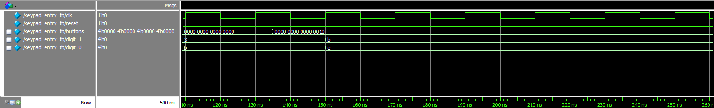
This waveform shows the module properly keeping track of the two most recently entered digits on the keypad, with the most recent digit appearing on the right (digit_0).
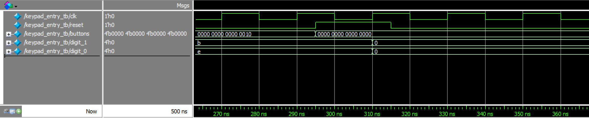
This waveform demonstrates the reset functionality.
Keypad Multipress Handler
Here are the waveforms for the keypad_multipress module. This module is responsible for keeping track of how many buttons are being pressed and telling the keypad_entry module when to update.
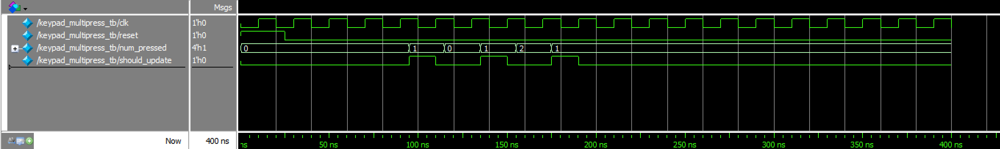
This waveform demonstrates the key state transitions of the module:
- going from 0 presses to 1 press
- going from 1 press to multiple presses
- going from multiple presses to 1 press
- going from 1 press to 0 presses
The module only outputs should_update when entering the 1-press state from a 0-press or multi-press condition.
Keypad Settler
Here are the waveforms for the keypad_settler module. This module tells the keypad module not to look at the column inputs right after a row change, because I was running into issues polling the keypad rows too fast.
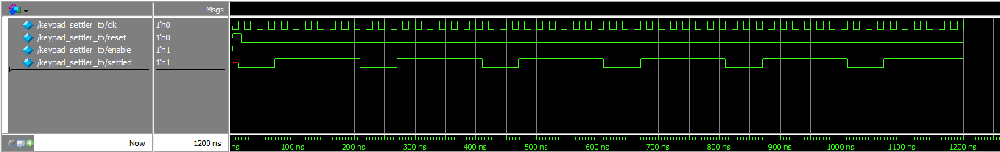
In this case, the output goes low for 3 clock cycles and then high for 7 clock cycles. The exact period can be configured to line up with the keypad’s POLL_DELAY.
Synchronizer
This module synchronizes asynchronous inputs, at the cost of introducing two clock cycles of delay.
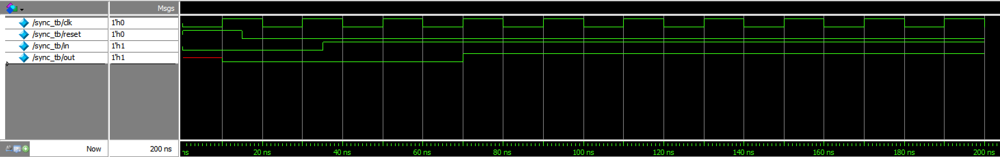
Already Verified Modules
counter: verified in Lab 1keypad_poller: same as the scanner module from Lab 2
Conclusion
After testing the design in hardware, it meets all the specifications, including all the edge cases involving multiple button presses.
Time spent: 13 hours
The lab was working entirely in hardware after about 5 hours.
AI Prototype
Prompt 1:
Target device: Lattice iCE40 UP5K FPGA with internal high-speed oscillator (~20 MHz).
Write synthesizable SystemVerilog to scan a 4x4 matrix keypad and display the last two hex keys pressed on a dual 7‑segment display. Implement:
- A clock divider that derives a scan clock on the order of 100–200 Hz from the internal oscillator.
- A keypad scanning controller that iterates one active‑low column at a time and samples active‑low rows, registering at most one key per press (debounce‑by‑design), ignoring additional presses while any key is held, and allowing a new registration only after release.
- A top level that updates two hex digits (older and most recent) when a new key is registered and drives a time‑multiplexed two‑digit 7‑segment display without visible flicker and with balanced brightness.
Use idiomatic SystemVerilog (e.g., logic, always_ff, enumerated states for FSMs). Provide clean module boundaries and keep all state synchronous. Include brief comments explaining the design choices.
// All state uses the 24 MHz oscillator clock. Hold reset high during
// startup, then deassert it synchronously to the oscillator clock.
module periodic_enable #(
parameter int unsigned CLOCK_HZ = 24_000_000,
parameter int unsigned RATE_HZ = 200
) (
input logic clk,
input logic reset,
output logic tick
);
localparam int unsigned COUNT_MAX = CLOCK_HZ / RATE_HZ;
localparam int unsigned WIDTH = $clog2(COUNT_MAX);
logic [WIDTH-1:0] count;
always_ff @(posedge clk) begin
if (reset) begin
count <= '0;
tick <= 1'b0;
end else if (count == COUNT_MAX - 1) begin
count <= '0;
tick <= 1'b1;
end else begin
count <= count + 1'b1;
tick <= 1'b0;
end
end
endmodule
module keypad_scanner (
input logic clk,
input logic reset,
input logic scan_tick,
input logic [3:0] rows_n,
output logic [3:0] cols_n,
output logic [3:0] key,
output logic key_valid
);
typedef enum logic [1:0] {
WAIT_PRESS, CONFIRM_PRESS, WAIT_RELEASE, CONFIRM_RELEASE
} state_t;
state_t state;
logic [1:0] column;
logic [3:0] rows_meta, rows_sync;
logic frame_any;
logic [3:0] frame_key, candidate;
logic sample_any;
logic [3:0] sample_key;
// Synchronize the asynchronous keypad inputs before sampling them.
always_ff @(posedge clk) begin
if (reset) begin
rows_meta <= 4'hF;
rows_sync <= 4'hF;
end else begin
rows_meta <= rows_n;
rows_sync <= rows_meta;
end
end
// Exactly one column is low. It remains selected for 5 ms before
// its rows are sampled and the next column is selected.
always_comb begin
cols_n = 4'hF;
cols_n[column] = 1'b0;
sample_any = (rows_sync != 4'hF);
sample_key = {column, 2'b00};
if (!rows_sync[0]) sample_key[1:0] = 2'd0;
else if (!rows_sync[1]) sample_key[1:0] = 2'd1;
else if (!rows_sync[2]) sample_key[1:0] = 2'd2;
else sample_key[1:0] = 2'd3;
end
always_ff @(posedge clk) begin
if (reset) begin
column <= 2'd0;
frame_any <= 1'b0;
frame_key <= 4'd0;
candidate <= 4'd0;
state <= WAIT_PRESS;
key <= 4'd0;
key_valid <= 1'b0;
end else begin
key_valid <= 1'b0; // One system-clock pulse per accepted key.
if (scan_tick) begin
if (sample_any && !frame_any)
frame_key <= sample_key;
if (column == 2'd3) begin
// Current sample completes the four-column frame.
case (state)
WAIT_PRESS: begin
if (frame_any || sample_any) begin
candidate <= frame_any ? frame_key : sample_key;
state <= CONFIRM_PRESS;
end
end
CONFIRM_PRESS: begin
if (!(frame_any || sample_any)) begin
state <= WAIT_PRESS;
end else if ((frame_any ? frame_key : sample_key)
== candidate) begin
key <= candidate;
key_valid <= 1'b1;
state <= WAIT_RELEASE;
end else begin
candidate <= frame_any ? frame_key : sample_key;
end
end
WAIT_RELEASE: begin
if (!(frame_any || sample_any))
state <= CONFIRM_RELEASE;
end
CONFIRM_RELEASE: begin
if (frame_any || sample_any)
state <= WAIT_RELEASE;
else
state <= WAIT_PRESS;
end
default: state <= WAIT_PRESS;
endcase
frame_any <= 1'b0;
column <= 2'd0;
end else begin
frame_any <= frame_any || sample_any;
column <= column + 2'd1;
end
end
end
end
endmodule
module hex_seven_segment (
input logic [3:0] hex,
output logic [6:0] segments_n // {a,b,c,d,e,f,g}, active low
);
always_comb begin
case (hex)
4'h0: segments_n = 7'b0000001;
4'h1: segments_n = 7'b1001111;
4'h2: segments_n = 7'b0010010;
4'h3: segments_n = 7'b0000110;
4'h4: segments_n = 7'b1001100;
4'h5: segments_n = 7'b0100100;
4'h6: segments_n = 7'b0100000;
4'h7: segments_n = 7'b0001111;
4'h8: segments_n = 7'b0000000;
4'h9: segments_n = 7'b0000100;
4'hA: segments_n = 7'b0001000;
4'hB: segments_n = 7'b1100000;
4'hC: segments_n = 7'b0110001;
4'hD: segments_n = 7'b1000010;
4'hE: segments_n = 7'b0110000;
default: segments_n = 7'b0111000; // F
endcase
end
endmodule
module keypad_hex_display (
input logic reset, // Active-high synchronous reset
input logic [3:0] rows_n, // Active-low; external pull-ups required
output logic [3:0] cols_n,
output logic [6:0] segments_n, // Shared, active-low segment outputs
output logic [1:0] digit_n // {older, newest}, active low
);
logic clk;
logic scan_tick, display_tick;
logic [3:0] key, older, newest, displayed_hex;
logic key_valid, select_newest;
SB_HFOSC #(.CLKHF_DIV("0b01")) oscillator (
.CLKHFPU(1'b1),
.CLKHFEN(1'b1),
.CLKHF(clk)
);
periodic_enable #(.RATE_HZ(200)) scan_rate (
.clk(clk), .reset(reset), .tick(scan_tick)
);
periodic_enable #(.RATE_HZ(1_000)) display_rate (
.clk(clk), .reset(reset), .tick(display_tick)
);
keypad_scanner scanner (
.clk(clk), .reset(reset), .scan_tick(scan_tick),
.rows_n(rows_n), .cols_n(cols_n),
.key(key), .key_valid(key_valid)
);
always_ff @(posedge clk) begin
if (reset) begin
older <= 4'h0;
newest <= 4'h0;
select_newest <= 1'b0;
end else begin
if (key_valid) begin
older <= newest;
newest <= key;
end
if (display_tick)
select_newest <= ~select_newest;
end
end
// Equal 1 ms slots give each digit a 500 Hz refresh rate and 50% duty.
assign displayed_hex = select_newest ? newest : older;
assign digit_n = select_newest ? 2'b10 : 2'b01;
hex_seven_segment decoder (
.hex(displayed_hex), .segments_n(segments_n)
);
endmoduleI found the design somewhat obscure and hard to understand. All of the keypad logic is placed into one giant FSM with lots of internal signals. There appear to be four states that involve confirming or waiting for button presses and releases. The next state logic is very unclear to me, there are lots of signals whose purposes I am not sure of, and all of it is wrangled into a convoluted case statement. The LLM did not really provide an explanation of how the design worked. If I were to design this on my own, I would have modularized the design more.
Prompt 2:
Target device: Lattice iCE40 UP5K FPGA.
Overall Goal: Write SystemVerilog to scan a 4x4 matrix keypad and display the last two hex keys pressed on a dual 7 segment display.
Current Goal: Write a synthesizable SystemVerilog module that produces a one‑shot registration signal for the keypad system. Behavior:
- When a key press is first detected, capture the current key code and assert a single‑cycle “new key” pulse.
- While any key remains pressed, do not accept additional keys.
- Only after keys are released should a subsequent press be recognized.
- This should handle debouncing of the keys.
Implement as a small synchronous FSM with enumerated states and glitch‑free outputs. Keep names and interfaces reasonable; do not assume any hidden modules beyond what you define here.
Write a synthesizable SystemVerilog module that cycles through keypad columns (active‑low, one at a time) and samples rows (active‑low) to detect a single key at a time. Behavior:
- Iterate columns at a suitable scan rate derived from the divided clock and sample rows.
- When a key is detected, report a stable key code consistent with a standard 4x4 keypad layout and maintain it while the key remains pressed.
- Provide a boolean signal indicating whether any key is currently pressed.
Use clean state encoding and synchronous logic; avoid combinational feedback and latches.
Write a top‑level SystemVerilog module that instantiates the scanner and one‑shot modules, shifts the last two keys (older ← most recent; most recent ← new), and drives a multiplexed two‑digit seven‑segment display. Requirements:
- Update the displayed digits only when a new key is registered.
- Ensure equal apparent brightness and no visible flicker.
- Keep all logic synthesizable and synchronous; use idiomatic SystemVerilog constructs.
Provide any small clock‑enable or divider logic you need. You can also assume that a sevenSegment module exists that takes a 4 bit input and outputs the 7 segments.
module key_register #(
// Number of consecutive clock cycles for which the press/release
// condition must remain stable before it is accepted.
parameter int unsigned DEBOUNCE_CYCLES = 4
) (
input logic clk,
input logic rst_n,
// Inputs from keypad scanner / decoder
input logic key_pressed, // 1 when any key is detected
input logic [3:0] key_code, // decoded hexadecimal key
// Registered output
output logic new_key, // one-clock pulse for each accepted press
output logic [3:0] registered_key
);
typedef enum logic [1:0] {
IDLE, // waiting for a key press
DEBOUNCE_PRESS, // verifying that press is stable
HELD, // key accepted; wait for release
DEBOUNCE_RELEASE // verifying that release is stable
} state_t;
state_t state;
localparam int unsigned COUNT_WIDTH =
(DEBOUNCE_CYCLES <= 1) ? 1 : $clog2(DEBOUNCE_CYCLES);
logic [COUNT_WIDTH-1:0] debounce_count;
logic [3:0] candidate_key;
always_ff @(posedge clk or negedge rst_n) begin
if (!rst_n) begin
state <= IDLE;
debounce_count <= '0;
candidate_key <= '0;
registered_key <= '0;
new_key <= 1'b0;
end
else begin
// Default assignment makes new_key a one-clock pulse.
new_key <= 1'b0;
case (state)
// ---------------------------------------------------------
// Wait for the beginning of a key press.
// ---------------------------------------------------------
IDLE: begin
debounce_count <= '0;
if (key_pressed) begin
// Remember the key seen at the start of the press.
candidate_key <= key_code;
if (DEBOUNCE_CYCLES <= 1) begin
registered_key <= key_code;
new_key <= 1'b1;
state <= HELD;
end
else begin
state <= DEBOUNCE_PRESS;
end
end
end
// ---------------------------------------------------------
// Require the key to remain pressed long enough to reject
// contact bounce.
// ---------------------------------------------------------
DEBOUNCE_PRESS: begin
if (!key_pressed) begin
// Press disappeared before debounce interval ended.
debounce_count <= '0;
state <= IDLE;
end
else if (debounce_count == DEBOUNCE_CYCLES - 2) begin
registered_key <= candidate_key;
new_key <= 1'b1;
debounce_count <= '0;
state <= HELD;
end
else begin
debounce_count <= debounce_count + 1'b1;
end
end
// ---------------------------------------------------------
// A key has already been registered. Ignore all key-code
// changes until every key has been released.
// ---------------------------------------------------------
HELD: begin
debounce_count <= '0;
if (!key_pressed) begin
if (DEBOUNCE_CYCLES <= 1) begin
state <= IDLE;
end
else begin
state <= DEBOUNCE_RELEASE;
end
end
end
// ---------------------------------------------------------
// Require release to remain stable before re-arming.
// This prevents release bounce from producing another key.
// ---------------------------------------------------------
DEBOUNCE_RELEASE: begin
if (key_pressed) begin
// Still the same physical press, or release bounce.
debounce_count <= '0;
state <= HELD;
end
else if (debounce_count == DEBOUNCE_CYCLES - 2) begin
debounce_count <= '0;
state <= IDLE;
end
else begin
debounce_count <= debounce_count + 1'b1;
end
end
default: begin
state <= IDLE;
debounce_count <= '0;
end
endcase
end
end
endmoduleThe design is more modular than the monolithic prompt, but it is still quite convoluted to me. For example, the debouncer module is much longer than mine and has four states, whereas mine only has two. It is also written specifically for the keypad module, while I designed min to be more of a general-purpose debouncer that could be used anywhere. In the future, I think I would talk through the approach with an LLM first before having it generate any code, that way I will be able to understand the design better.